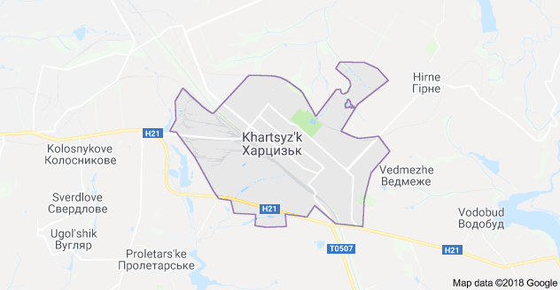

- Город Харцызск
- Зугрэсский городской совет
- Иловайский городской совет
- Зуевский поселковый совет
- Троицко-Харцызский поселковый совет
- пгт Горное
- посёлок Медвежье
Общественный транспорт
- № 1, «Ж.-д. вокзал — Промрайон» (автобус и троллейбус)
- № 2, «Депо — Промрайон» (троллейбус)
- № 4, «Ж.-д.вокзал — Горбольница» (троллейбус)
- № 5, «Горбольница — Автовокзал — Заводоуправление» (автобус)
- № 5—4, «Заводоуправление — Автовокзал» (автобус)